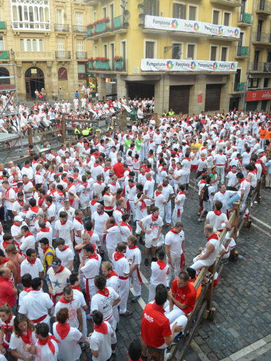

Introducción

La cultura vasca es rica y diversa, con una historia que se remonta a miles de años. El País Vasco, situado en el norte de España y el suroeste de Francia, es conocido por su lengua única, sus tradiciones y su vibrante vida cultural.
Idioma

El euskera, o vasco, es una de las lenguas más antiguas de Europa y no está relacionada con ninguna otra lengua conocida. A pesar de los desafíos históricos, el euskera ha sobrevivido y hoy en día es hablado por una parte significativa de la población vasca.
Fiestas y Tradiciones
El País Vasco es famoso por sus fiestas y tradiciones. Entre las más destacadas se encuentran la Tamborrada de San Sebastián, la Semana Grande de Bilbao y las fiestas de San Fermín en Pamplona.
- Tamborrada de San Sebastián
- Semana Grande de Bilbao
- San Fermín en Pamplona
Deportes Rurales

Los deportes rurales vascos, conocidos como herri kirolak, son una parte integral de la cultura vasca.
Gastronomía

La gastronomía vasca es reconocida mundialmente por su calidad y diversidad.
Arte y Música
El arte y la música juegan un papel importante en la cultura vasca. El Museo Guggenheim en Bilbao es un símbolo de la modernidad y el arte contemporáneo.